Stochastic Dispatch for Mid and Long Term planning
The stochastic dispatch problem is a computational challenge in energy systems planning. It involves optimizing the allocation of resources (such as hydro and thermal power generation) to meet electricity demand while accounting for uncertain factors such as water inflow levels and fuel prices.
Modeling of Basic System Components
Thermal Plants
In purely thermal systems, the operating cost of each plant depends mainly on the cost of its fuel. Each thermal plant \(j\) is associated with an operating cost \(c_j\) in \(\$ / \text{MWh}\).
At each stage \(t\), the generation \(g_{t}(j)\) of thermal plant \(j\) is limited by a generation limit \(\bar{g}_{t}(j)\) such that:
where:
| Symbol | Description | Unit |
|---|---|---|
| \(j\) | index of thermal plant | |
| \(g_t(j)\) | generation of plant \(j\) at stage \(t\) | \(\text{MWh}\) |
| \(\bar{g}_t(j)\) | maximum generation capacity of plant \(j\) | \(\text{MWh}\) |
Hydro Plants With Reservoir
The following image shows the schematic diagram of a hydro plant.
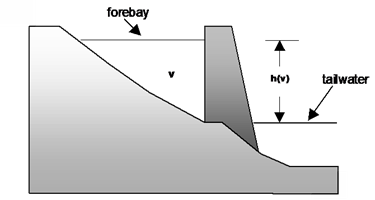
Figure 1 - Hydro Plant with Reservoir
The operation of the hydro plants is modeled through a series of equations presented below.
Water balance
The water balance equation represents the coupling between successive stages. As illustrated in Figure 2, the water balance at each hydro plant considers the plant's outflow, the lateral inflow and outflow from upstream plants.
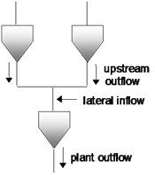
Figure 2 - Reservoir Water Balance
The reservoir storage of plant \(i\) at the beggining of stage \(t\) is denoted by \(v_t(i)\). At each stage \(t\) and for each hydro plant \(i\), the reservoir storage at the end of stage \(t\), which corresponds to \(v_{t+1}(i)\), is equal to:
-
the storage at the beggining of the stage
-
minus outflow volumes, including:
- turbined outflow
- spilled outflow
- irrigation
- infiltration, which is a function of storage
- evaporation, which is a function of storage
-
plus inflow volumes, including:
- outflow from upstream plants
- lateral inflow
where:
| Symbol | Description | Unit |
|---|---|---|
| \(v_{t}(i)\) | storage at plant \(i\) at the beggining of stage \(t\) | \(\text{hm}^3\) |
| \(a_{t}(i)\) | lateral inflow at plant \(i\) at stage \(t\) | \(\text{hm}^3\) |
| \(u_{t}(i)\) | turbined outflow of plant \(i\) at stage \(t\) | \(\text{hm}^3\) |
| \(s_{t}(i)\) | spilled outflow of plant \(i\) at stage \(t\) | \(\text{hm}^3\) |
| \(\phi_{t}(i)\) | irrigation from plant \(i\) at stage \(t\) | \(\text{hm}^3\) |
| \(\gamma_{i}(v_{t}(i))\) | infiltration of plant \(i\) at stage \(t\) | \(\text{hm}^3\) |
| \(\epsilon_{i}(v_{t}(i))\) | evaporation of plant \(i\) at stage \(t\) | \(\text{hm}^3\) |
| \(\mathcal{I}_U(i)\) | set of hydro plants which turbine to plant \(i\) | |
| \(\mathcal{I}_S(i)\) | set of hydro plants which spill to plant \(i\) | |
| \(\mathcal{I}_F(i)\) | set of hydro plants which infiltrate to plant \(i\) |
Note from the equation above that \(v_{t+1}(i)\), \(u_{t}(i)\) and \(s_{t}(i)\) are decision variables of the stage problem.
Limits on storage and outflow
At each stage \(t\) and for each hydro plant \(i\), its storage and outflows are limited.
where:
| Symbol | Description | Unit |
|---|---|---|
| \(\overline{v}_{t}(i)\) | maximum storage capacity of plant \(i\) | \(\text{hm}^3\) |
| \(\overline{u}_{t}(i)\) | maximum turbining capacity of plant \(i\) | \(\text{hm}^3\) |
| \(\overline{s}_{t}(i)\) | maximum spilling capacity of plant \(i\) | \(\text{hm}^3\) |
Energy production
Hydro plants convert the potential energy of stored water into kinetic energy, which is used to rotate turbines coupled to an electric generator. The production coefficient of a hydro plant is a function of the net head, and consequently a function of the storage. Each plant \(i\) is associated with a production coefficient function \(\rho_{i}\). Accordingly, the power generation of the hydro plant \(i\), resulting from the release of the outflow \(u_{t}(i)\) through the turbines is given by:
where:
| Symbol | Description | Unit |
|---|---|---|
| \(g_t(i)\) | energy production | \(\text{MWh}\) |
| \(\rho_{i}\) | production coefficient function of plant \(i\) | \(\text{MWh}/\text{m}^3\) |
| \(u_t(i)\) | turbined outflow | \(\text{m}^3\) |
Run-of-the-river Hydro Plants
These plants differ due to not having a reservoir capable of storing water for later stages.
Pumped Storage Hydro Plants
These plants have upper and lower storage reservoirs whose water volume is not fed by streamflows. It is operated in a charge-discharge cycle, where charge means pumping up the water in the downstream reservoir to the upper reservoir in periods of low load (energy consumption), while turbining water to the lower reservoir for energy production in periods of high load.
The representation of its operation is detailed later on.
Pure Reservoirs
Pure reservoirs are used to store water, non-energy consumption and regulate the outflow for downstream plants. The corresponding water balance equation does not have the outflow term.
Load
Supply of electricity energy demand is represented through a constraint that the sum of energy produced (in hydro and thermal plants) must be equal to the load \(d_{t}\) at stage \(t\), that is:
Additional terms in the above equation for VRE sources, storage etc are discussed later on.
The Stochastic Dispatch Problem
The objective of stochastic dispatch scheduling is to determine the sequence of hydro releases, which minimizes the expected thermal operation cost (given by fuel cost plus penalties for rationing) along the planning horizon. This problem can be represented as a decision tree, as illustrated in Figure 3.
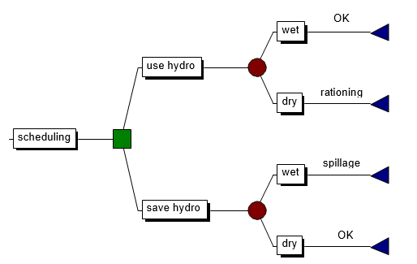
Figure 3 - Decision Process for Hydrothermal Systems
As seen in the picture, the operator is faced with the options of turbining hydro energy today, and therefore avoiding complementary thermal costs, or storing the hydro energy for use in the next period. If hydro energy is used today, and future inflows are high - thus allowing the recovery of reservoir storage - system operation will be more efficient. However, if a drought occurs later on, it may be necessary to use more expensive thermal generation in the future, or even interrupt load supply.
If, on the other hand, hydro storage levels are kept high through a more intensive use of thermal generation today, and high inflows occur in the future, reservoirs may spill, which is a waste of energy and, therefore, results in increased operation costs. Finally, if a dry period occurs later on, the storage will be used to displace expensive thermal or rationing in the future.
Uncertainties in production of non dispatchable VREs are simpler to deal with since they do not imply in time coupling in decisions of hydro plants with reservoir. Their representation, as well as short-term storage devices, will be discussed later.
Problem Formulation
The stochastic dispatch scheduling formulation will be illustrated for one hydro plant and the three-stage hydro plant inflow tree of Figure 4.
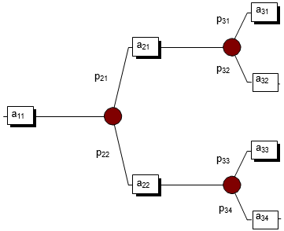
Figure 4 - Hydro Plant Inflow Scenario Tree
where:
| Symbol | Description | Unit |
|---|---|---|
| \(a_{ts}\) | inflow in stage \(t\), scenario \(s\) | \(\text{m}^3\) |
| \(p_{ts}\) | conditioned probability of inflow in stage \(t\), scenario \(s\) | \(p.u\) |
The stochastic scheduling problem is formulated as:
Subject to:
a. Water balance constraints
b. Constraints on storage and outflow
For each stage \(t\) and each scenario \(s\), reservoir storage and plant outflows are limited.
where:
| Symbol | Description | Unit |
|---|---|---|
| \(v_{ts}\) | reservoir storage at stage \(t\) and scenario \(s\) | \(\text{hm}^3\) |
| \(u_{ts}\) | turbined outflow at stage \(t\) and scenario \(s\) | \(\text{hm}^3\) |
| \(s_{ts}\) | spilled outflow at stage \(t\) and scenario \(s\) | \(\text{hm}^3\) |
The thermal complement function \(c_{t}(u_{ts})\) is implicitly represented as the solution of the following LP problem:
Subject to:
c. Load supply constraints
At each stage \(t\), the load demand must be supplied:
d. Thermal generation limits
The generation of each thermal plant \(j\) is limited.
where:
| Symbol | Description | Unit |
|---|---|---|
| \(j\) | index of a thermal plant | |
| \(J\) | number of thermal plants | |
| \(c_{t}(j)\) | unit operating cost of plant \(j\) | \(\$/\text{MWh}\) |
| \(g_{t}(j)\) | energy generation of plant \(j\) in stage \(t\) | \(\text{MWh}\) |
| \(\overline{g}_{t}(j)\) | energy generation capacity of plant \(j\) | \(\text{MWh}\) |
| \(d_{t}\) | energy demand in stage \(t\) | \(\text{MWh}\) |
| \(\rho\) | hydro plant production coefficient (assumed to be constant in this example) | \(\text{MWh}/\text{m}^3\) |
Problem \(\text{(1)}\) can in principle be solved by linear programming (LP) algorithms. However, the actual scheduling problem involves several hydro plants and, in many cases, a planning horizon of several years. Due to the exponential increase of inflow branches with time, the resulting stochastic optimization problem quickly becomes computationally infeasible. This has motivated the development of solution approaches based on a state-space formulation, described next.
State Space Solution Approach
Immediate and Future Costs
As shown in Figure 5, the scheduling problem is decomposed into several one-stage sub-problems, where the objective is to minimize the sum of immediate and future operating costs
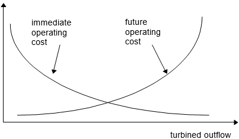
Figure 5 - Immediate and Future Costs versus Final Storage
The immediate cost function (ICF) corresponds to the thermal complement function \(c_{t}(u_{t})\) discussed in the previous section. We see in the figure that, as hydro outflow increases, less thermal generation is needed, and the immediate cost decreases. In turn, the future cost function (FCF) reflects the expected thermal generation expenses from stage \(t+1\) to the end of the planning period. We see that the FCF increases with the turbined outflow, as less water will be available in the future to displace thermal generation.
One-Stage Stochastic Dispatch
Given the initial storage \(v_{t}\) and the future cost function \(\alpha_{t+1}(v_{t+1})\), the one-stage scheduling problem is formulated as:
subject to:
In contrast with the very large stochastic LP problem \(\text{(1)}\), the one-stage problem \(\text{(2)}\) can be easily solved by standard LP schemes.
Future Cost Function
Enumeration of all future states
The future cost function calculation is naturally the key aspect of the state-space scheme. In theory, \(\alpha_{t+1}(v_{t+1})\) could be calculated by simulating system operation in the future for different starting values of initial storage and calculating the operating costs, as illustrated in Figure 6.
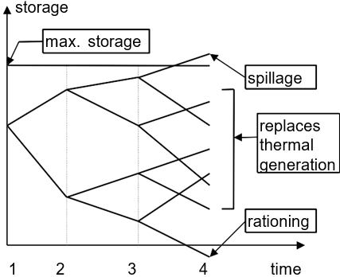
Figure 6 - "Brute Force" FCF Calculation
However, this "brute force" approach has the same computational drawbacks as the explicit stochastic formulation. Therefore, the future cost function in each stage is calculated through a more efficient stochastic dynamic programming (SDP) recursion:
SDP recursion
For each stage \(t\) (typically a week or month) define a set of system states indexed by \(m = 1,\ldots,M\), for example, reservoir levels at 100%, 90%, etc. until 0%. Figure 7 illustrates the system state definition for a single reservoir. Note that the initial state (i.e. storage levels at the beginning of the first stage) is assumed to be known.
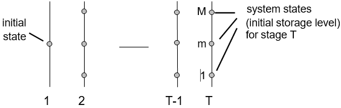
Figure 7 - Definition of System States
Start with the last stage, T, and solve the one-stage stochastic dispatch problem \(\text{(2)}\) assuming that the initial reservoir storage corresponds to the first storage level selected in step a - for example, 100%. Because we are at the last stage, assume that the future cost function is zero. Also, because of inflow uncertainty, the hydro scheduling problem is successively solved for K different inflow scenarios, i.e. different possible values for inflows in that stage. The procedure is illustrated below.
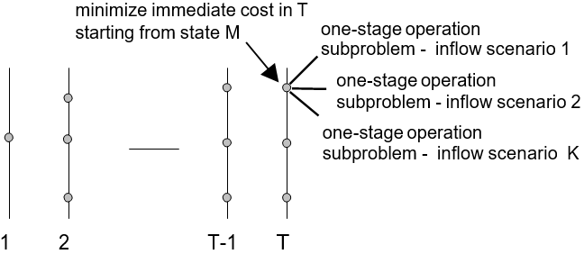
Figure 8 - Optimal Strategy Calculation: Last Stage
Calculate the expected operation cost associated to storage level 100% as the mean of the K one-stage subproblem costs. This will be the first point of the expected future cost function for stage \(T − 1\), i.e. \(a_{t+1}(v_{t+1})\).
Repeat the calculation of expected operation costs for the remaining states in stage \(T\). Interpolate the costs between calculated stages, and produce the FCF \(a_{t+1}(v_{t+1})\) for stage \(T-1\), as illustrated in Figure 9.
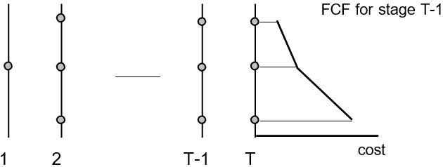
Figure 9 - Calculation of the FCF for Stage T-1
The process is then repeated for all selected states in stage \(T − 1\), as illustrated in Figure 10. Note that the objective is now to minimize the immediate operation cost in stage \(T-1\) plus the expected future cost, given by the previously calculated FCF.
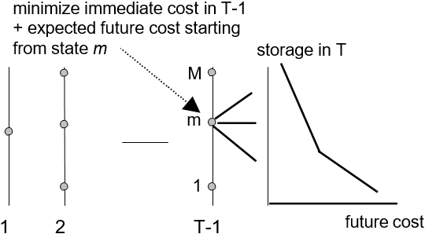
Figure 10 - Calculation of Operation Costs for Stage T-1 and FCF calculated in stage T
Repeat the procedure of step d for the remaining stages \(T-2\), \(T−3\) etc. until the first stage.
Implementation of the SDP scheme
Initialize the end-of-horizon future cost function \(a_{t+1}(v_{t+1}) \leftarrow 0\)
For \( t = 1, \ldots, T \)
-
For each storage value \( v_{t} = v_{t}^1, \ldots, v_{t}^m, \ldots, v_{t}^M \)
-
For each inflow scenario \( a_{t} = a_{t}^1, \ldots, a_{t}^m, \ldots, a_{t}^M \)
-
Solve the one-stage problem (2) for initial storage \(v_{t}^m\) and inflow \(a_{t}^k\)
\[ \begin{align*} &a_{t}^k(v_{t}^m) = \min c_{t}(u_{t}) + $a_{t+1}(v_{t+1}) \\ &\quad \\ &\text{Subject to:} \\ &\quad \\ &v_{t+1}=v_{t}^m-u_{t}-s_{t}+$a_{t}^k \\ &v_{t+1} \leq \overline{v} \\ &u_{t} \leq \overline{u} \end{align*} \]
-
-
Next
-
Calculate the expected operation cost over all inflow scenarios:
\[a_{t}^k(v_{t}^m) = \sum_{k=1}^K p_{k} \cdot a_{t}^k(v_{t}^m)\]
-
-
Next
-
Create a complete future cost function \(a_{t}(v_{t})\) for the previous stage by interpolation on the discrete values \(\{a_{t}^k(v_{t}^m), =1,\ldots,M\}\)
Next
Representation of Serial Correlation by Markov Chains
Most inflow sequences present serial correlation, i.e. if the inflow in the past month was "drier" than average, there is a tendency for the inflows that follow to be drier as well. This is due to the "capacitor" characteristics of underground aquifers, where the rate of release depends on the amount of water absorbed in the past. This correlation may be represented by a Markov chain, where \(p_{kl}\) represents the transition probability from inflow \(a_{t}^k\) in stage \(t\) to inflow \(a_{t+1}^l\) in stage \(t+1\).
| \(t\) ↓ \(t+1\) → | \(a_{t+1}^1\) | \(\ldots\) | \(a_{t+1}^l\) | \(\ldots\) | \(a_{t+1}^L\) |
|---|---|---|---|---|---|
| \(a_{t}^1\) | \(p_{11}\) | \(\ldots\) | \(p_{1l}\) | \(\ldots\) | \(p_{1L}\) |
| \(\ldots\) | \(\ldots\) | \(\ldots\) | \(\ldots\) | \(\ldots\) | \(\ldots\) |
| \(a_{t}^k\) | \(p_{k1}\) | \(\ldots\) | \(p_{kl}\) | \(\ldots\) | \(p_{kL}\) |
| \(\ldots\) | \(\ldots\) | \(\ldots\) | \(\ldots\) | \(\ldots\) | \(\ldots\) |
| \(a_{t}^K\) | \(p_{K1}\) | \(\ldots\) | \(p_{11}\) | \(\ldots\) | \(p_{KL}\) |
The future cost function in the SDP scheme now has two state variables: storage at the beginning of stage \(t\) and inflow along the stage. The procedure is implemented as follows:
Initialize the end-of-horizon future cost function \(a_{T+1}(v_{t},a_{t}) \leftarrow 0\)
For \( t = T, T-1, \ldots, 1 \)
-
For each storage value \( v_{t} = v_{t}^1,\ldots,v_{t}^m,\ldots,v_{t}^M \)
-
For each inflow scenario \( a_{t} = a_{t}^1, \ldots, a_{t}^k, \ldots, a_{t}^K \)
-
Solve the one-stage problem for initial storage \(v_{t}^m\) and inflow \(a_{t}^k\) as the minimization of immediate cost plus the expected value of future costs over all transitions from \(a_{t}^k\) to \(\{a_{t+1}^l\}\) in the next stage (see Figure 11):
\[\begin{align*} &a_{t}^k(v_{t}^m) = \min c_{t}(u_{t}) + a_{t+1}(v_{t+1}) \\ &\quad \\ &\text{Subject to:} \\ &\quad \\ &v_{t+1}^k=v_{t}^m-u_{t}-s_{t}+a_{t}^k \\ &v_{t+1}^k \leq \overline{v} \\ &u_{t} \leq \overline{u} \end{align*}\]
-
-
Next
-
-
Next
-
Create a complete future cost function \(a_{t}(v_{t},a_{t})\) for the previous stage by interpolation over the values \(\{a_{t}^k(v_{t}^m,a_{t}^k), m=1,\ldots,M;k=1,\ldots,K\}\)
Next
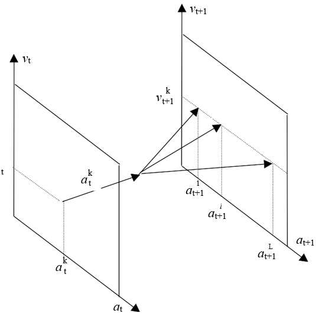
Figure 11 - SDP with at as a state variable
Alternative Representation of Serial Correlation
An alternative (and mathematically equivalent) way to represent serial correlations is to use as a state variable the inflow in the previous stage, \(a_{t-1}\) (see Figure 12). The procedure is then:
Initialize the end-of-horizon future cost function \(a_{T+1}(v_{t},a_{T-1}) \leftarrow 0\)
For \(t = T,T-1,\ldots,1\)
-
For each storage value \(v_{t} = v_{t}^1,\ldots,v_{t}^m,\ldots,v_{t}^M\)
-
For each previous inflow scenario \(a_{t-1} = a_{t-1}^1,\ldots,a_{t-1}^k,\ldots,a_{t-1}^K\)
-
For each inflow in \(t\) conditioned to previous inflow \(a_{t-1}^k : a_{t} = a_{t}^1,\ldots,a_{t}^l,\ldots,a_{t}^L\)
-
Solve the dispatch for initial storage \(v_{t}^m\) and conditioned inflow \(a_{t}^l\):
\[\begin{align*} &a_{t}^l(v_{t}^m,a_{t-1}^k) = \min c_{t}(u_{t}) + a_{t+1}(v_{t+1}^l,a_{t}^l) \\ &\quad \\ &\text{Subject to:} \\ &\quad \\ &v_{t+1}^l=v_{t}^m-u_{t}-s_{t}+a_{t}^l \\ &v_{t+1}^l \leq \overline{v} \\ &u_{t} \leq \overline{u} \end{align*}\]
-
-
Next
-
Calculate the expected operation cost over all inflow scenarios:
\[a_{t}(v_{t}^m,a_{t-1}^k) = \sum_{k=1}^L p_{kl}\cdot a_{t}^l(v_{t}^m,a_{t-1}^k)\]
-
-
Next
-
-
Next
-
Create a complete future cost function \(a_{t}(v_{t},a_{t-1})\) for the previous stage by interpolation over the values \(\{a_{t}(v_{t}^m,a_{t-1}^k), m=1,\ldots,M;k=1,\ldots,K\}\)
Next
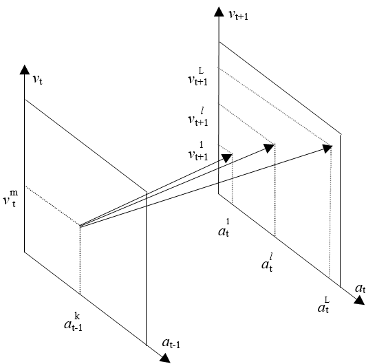
Figure 12 - SDP with at-1 as a state variable
SDP Scheme Limitations
The SDP scheme is straightforward to implement and has been used for several years in most hydro-dominated countries. However, as seen above, the SDP recursion requires the enumeration of all combinations of initial storage values and previous inflows. As a consequence, computational effort increases exponentially with the number of reservoirs, the well-known "curse of dimensionality" of dynamic programming. This is illustrated in Table 1, which shows the number of combinations for different system sizes, assuming that that each of the state variables for reservoir storage and inflow is divided into 20 levels.
Table 1 - Curse of dimensionality
| # plants | # states |
|---|---|
| 1 | \(20^2=400\) |
| 2 | \(20^4=160\) thousand |
| 3 | \(20^6=64\) million |
| 4 | \(20^8 \approx 25\) billion |
| 5 | \(20^{10} \approx 10\) trillion |
For this reason, it became necessary to develop computationally feasible state-space schemes. The traditional approach, still adopted in many countries, has been to reduce system dimensionality by the aggregating system reservoirs into one reservoir that represents the energy production capability of the cascade. This scheme is in some cases coupled with the use of partial dynamic programming schemes (typically, calculation of separate future cost functions for each basin).
PSR conceived and developed an approach based on the analytical representation of the future cost function, known as stochastic dual dynamic programming (SDDP) that has been applied in several countries in South and Central America, plus USA, New Zealand, Spain and Norway. The SDDP scheme does not require discretization of the state space and, as a consequence, alleviates the computational requirements of the stochastic DP recursion.
The Dual DP Scheme
The SDDP Algorithm
Piecewise approximation of the future cost function
The Dual DP scheme is based on the observation that the FCF can be represented as a piece- wise linear function, i.e. there is no need to create an interpolated table. Furthermore, it is shown that the slope of the FCF around a given point can be analytically obtained from the one-stage dispatch problem \(\text{(2)}\). Figure 13 illustrates the Dual DP calculation of expected operation cost and FCF slope for the last stage, initial state = 100% (step (c) of the traditional DP procedure).
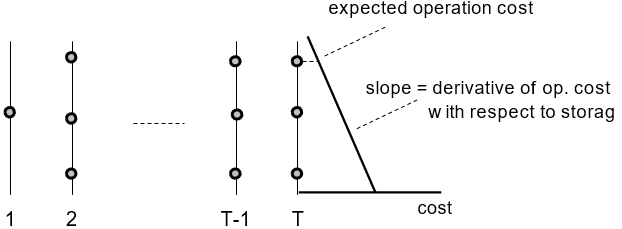
Figure 13 - Dual DP: Calculation of First FCF Segment
The last-stage dispatch problem is shown below (note that the future cost function in this stage, \(a_{T+1}(v_{T+1})\), is set to zero):
It is well known from LP theory that there is a set of simplex multipliers associated to the constraints of problem \(\text{(3)}\) at the optimal solution. These multipliers represent the derivative of the optimal solution value (operation cost in this case) with respect to a perturbation in the constraint right-hand side. In particular, the multiplier associated to the water balance equation, \(\pi_{h}\), represents the derivative of \(z_{T}\) with respect to a variation in initial storage \(v_{T}\):
We see in Figure 13 that expression \(\text{(4)}\) corresponds to the slope of the future cost function for stage \(T-1\). The linear segment can also be interpreted as a (linear) series expansion of the FCF around the initial storage \(v_{T}\).
Figure 14 shows the calculation of operation cost and FCF slopes for each state in stage T. We see that the FCF \(\alpha_{T}(v_{T})\) for stage \(T-1\) corresponds to the piecewise cost surface produced by taking the linear segment with the highest cost value in each state (convex hull).
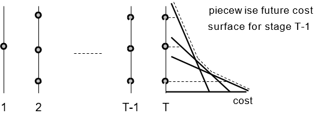
Figure 14 - Calculation of a PiecewiseFCF for Stage T-1
The stochastic dispatch for the previous stage \(T-1\) is represented as a LP problem:
The future cost function is represented by the scalar variable \(\alpha_{T}\) and \(N\) linear constraints \(\{\alpha_{T} \geq \phi_{T}^n \cdot v_{T} + \delta_{T}^n \}\), where \(N\) is the number of linear segments.
As shown in Figure 15, the inequalities \(\{\alpha_{T} ≥ \ldots \}\) represent the piecewise characteristic of this function (for any \(v_{T}\), the segment with the highest value \(\alpha_{T} \geq \phi_{T}^n \cdot v_{T} + \delta_{T}^n\) will always be binding).
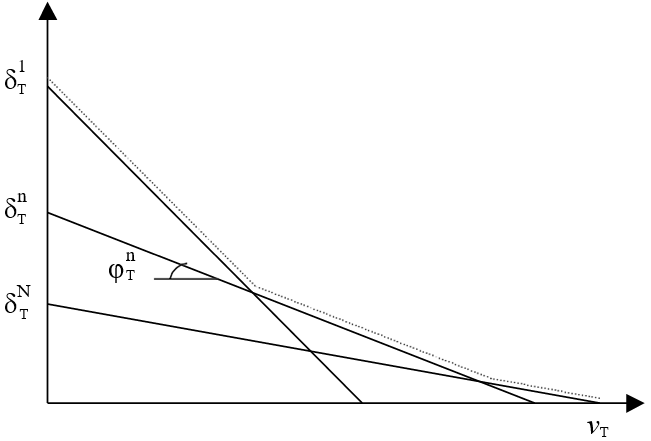
Figure 15 - Piecewise linear future cost function
Backward Recursion Scheme
The recursive calculation of the piecewise linear future cost functions is very similar to the standard stochastic DP scheme:
Set number of linear segments \(N\) = number of initial storage values \(M\)
Initialize future cost function for the last stage as zero:
For \(t = T,T-1,\ldots,1\)
-
For each storage value \(v_{t} = \{v_{t}^m, m = 1,\ldots,M\}\)
-
For each inflow scenario \(\alpha_{t} = \alpha_{t}^1,\ldots,\alpha_{t}^k,\ldots,\alpha_{t}^K\)
-
Solve the one-stage scheduling problem for initial storage \(v_{t}^m\) and inflow \(\alpha_{t}^k\):
subject to:
\[\begin{align*} &\alpha_{t}^k(v_{t}^m) = \min c_{t}(u_{t}) + \alpha_{t+1} \tag{6} \\ &\quad \\ &\text{Subject to:} && \text{multiplier} \\ &\quad \\ &v_{t+1}^k=v_{t}^m-u_{t}-s_{t}+\alpha_{t}^k && \pi_{ht}^k \\ &v_{t+1}^k \leq \overline{v} \\ &u_{t} \leq \overline{u} \\ &\alpha_{T+1} \geq \phi_{T+1}^n \cdot v_{T+1} + \delta_{T+1}^n \quad n = 1, \ldots, N \end{align*}\]
-
-
Next
-
Calculate the coefficient and constant term for the \(m^th\) linear segment of the future cost function in the previous stage:
\[\phi_{t}^m = \sum_{k=1}^K p_{k}\cdot\pi_{ht}^k\quad \text{and} \quad \delta_{t}^m = \sum_{k=1}^K p_{k}\cdot\alpha_{t}^k\cdot(v_{t}^m) - \phi_{t}^m \cdot v_{t}^m\]
-
-
Next
Next
Lower bound calculation
At first sight, there are no substantial differences between the Dual DP procedure and the traditional DP scheme. Note, however, that the traditional scheme had to create a new future cost function table in each stage by interpolation of the discrete values \(\{\alpha_{t}(v_{t}^m)\}\). As a consequence, the required number of points in the table for a system of \(I\) hydro plants is at least equal to the \(2^I\) combinations of extreme points (full/empty).
In the Dual DP scheme, the piecewise linear segments can be used to extrapolate the future cost function values, i.e. it's not necessary to use all combinations of points to obtain a complete (although approximate) future cost function. Moreover, if a smaller number of initial storage values is used, a smaller number of linear segments will be generated. As seen in Figure 15, the resulting future cost function, which is based on the maximum value over all segments, will then be a lower bound to the "true" function.
As a consequence, the future cost function for the first stage is a lower bound \(\underline{z}\) to the optimal solution of the scheduling problem:
Upper Bound Calculation
If we also had a way of calculating an upper bound \(\overline{z}\) to the optimal solution value, this would allow a strategy of incrementally increasing the accuracy of the problem solution, i.e. start with a small set of initial volumes, calculate upper and lower bounds, and increase the number of points if necessary.
Simulation scheme
This upper bound can be obtained by a Monte-Carlo simulation of system operation, using the set of future cost functions produced by the recursion scheme. This is due to the fact that the only future cost function that can result in the optimal expected operation cost is the optimal function itself; all others, by definition, have to result in higher operation costs.
The simulation scheme is implemented in the following steps:
Define a set of inflow scenarios
For each inflow scenario \(a_{t} = a_{t}^1,\ldots,a_{t}^m,\ldots,a_{t}^M\)
-
Initialize storage value for stage 1 as \(v_{t}^m = v_{1}\)
-
For \(t=1,\ldots,T\)
-
Solve the one-stage scheduling problem for initial storage \(v_{t}^m\) and inflow \(a_{t}^m\):
\[ \begin{align*} &\min c_{t}(u_{t}) + \alpha_{t+1} \tag{8} \\ &\quad \\ &\text{Subject to:} \\ &\quad \\ &v_{t+1}^m=v_{t}^m-u_{t}^m-s_{t}+a_{t}^m \\ &v_{t+1}^m \leq \overline{v} \\ &u_{t}^m \leq \overline{u} \\ &\alpha_{t+1} \geq \phi_{t+1}^n \cdot v_{t+1}^m + \delta_{t+1}^n \quad n = 1, \ldots, N \end{align*} \]
-
-
Next
-
Calculate total operation cost \(z^m\) for simulation scenario \(m\) as the sum of all immediate costs along the study period:
Next
Confidence interval
The expected operation cost is estimated as the mean total cost over all simulation scenarios:
Because we used a Monte-Carlo simulation, there is an uncertainty around the "true" (population) expected value for \(\overline{z}\). The 95% confidence interval is given by:
where \(\hat{\sigma}\) is the standard deviation of the estimator, given by:
Optimality Check
Optimality is achieved when the lower bound \(\underline{z}\) calculated in \(\text{(7)}\) is inside the confidence interval \(\text{(10)}\). Note that, because of sampling variation, the lower bound can sometimes exceed the upper bound mean estimate \(\overline{z}\).
New Iteration
If the lower bound is outside the confidence interval, the backward recursion step is executed again with an additional set of storage values. The natural candidates for the new values are the volumes \(\{v_{t}^m; m=1,\ldots,M\}\) produced in the simulation step in the simulation scheme section.
Note that the linear segments calculated in the previous iteration are retained, because the piecewise future cost function is given by the maximum over all segments. In other words, it is possible to gradually improve the future cost function representation.
Representation of Serial Correlation in Dual DP
In order to represent serial correlation in SDDP, we model inflows as a continuous Markov process (linear autoregressive model) rather than a Markov chain:
where:
| Symbol | Description |
|---|---|
| \(\mu_{t}\) | inflow mean |
| \(\sigma_{t}\) | standard deviation |
| \(\phi_{1}, \phi_{2}\) | model parameters |
| \(\xi_{t}\) | independent random variable |
We use the formulation defined in the Alternative representation of serial correlation section, where the state variables are the reservoir storage at the beginning of stage \(t\), \(v_{t}\), and the inflow in the previous stage, \(\alpha_{t-1}\). This is illustrated in the equations below, which show the dispatch problem for stage \(t\), with initial storage \(v_{t}^m\) and previous inflow \(\alpha_{t-1}^m\):
The inflow for stage \(t, \alpha_{t}^l\), is obtained by applying the Markov process \(\text{(12)}\):
where \(\xi_{t}^l\) is sampled from the corresponding probability distribution.
The linear approximation of the future cost function for the previous stage will now have two coefficients, based on the derivatives of \(\alpha_{t}^l(v_{t}^m, \alpha_{t-1}^m)\) with respect to \(v_{t}^m \text{ and } \alpha_{t-1}^m\) at the optimal solution. The first coefficient is calculated as in the independent case:
The second is calculated through the chain rule:
The term \(\frac{\partial\alpha_{t}^l}{\partial \alpha_{t}}\) also corresponds to \(\pi_{ht}^l\), because both \(v_{t}^m\) and \(\alpha_{t}^l\) are in the same water balance equation. In turn, the term \(\frac{\partial\alpha_{t}}{\partial \alpha_{t-1}}\) is calculated from the inflow model parameters in \(\text{(14)}\):
The recursion scheme is implemented as follows:
Generation of \(M\) inflow sequences along the study period
Initialize \(\{a_{0}^m\},m=1,\ldots,M\)
For \(t = 1,\ldots,T\)
-
For \(m = 1,\ldots,M\)
-
Sample a random variable \(\xi_{t}^m\)
-
Calculate the inflow for stage \(t\) conditioned to previous inflow \(a_{t-1}^m\):
\[a_{t}^m = \sigma_{t} \cdot [\phi_{1} \cdot \frac{{a_{t}^m - \mu_{t-1}}}{{\sigma_{t-1}}} + \phi_{2} \cdot \xi_{t}^m] + \mu_{t}\] -
-
Next
Next
- Backward recursion
For \(t = T,T-1,\ldots,1\)
For \(m = 1,\ldots,M\)
-
Retrieve the pair [storage, past inflow] \(\{v_{t}^m,a_{t-1}^m\}\)
-
For \(l=1,\ldots,L\)
-
Sample a random variable \(\xi_{t}^l\)
-
Calculate the inflow for stage \(t\) conditioned to previous inflow \(a_{t-1}^m\):
\[a_{t}^l = \sigma_{t} \cdot [\phi_{1} \cdot \frac{{a_{t}^m - \mu_{t-1}}}{{\sigma_{t-1}}} + \phi_{2} \cdot \xi_{t}^l] + \mu_{t}\]-
Solve the one-stage scheduling problem for \(v_{t}^m \text{ and } \alpha_{t}^k\) :
\[ \begin{align*} &\alpha_{t}^l(v_{t}^m, \alpha_{t-1}^m) = \min c_{t}(u_{t}) + \alpha_{t+1} \tag{18} \\ &\quad \\ &\text{Subject to:} \\ &\quad \\ &v_{t+1}^l=v_{t}^m-u_{t}-s_{t}+a_{t}^l \\ &v_{t+1} \leq \overline{v} \\ &u_{t} \leq \overline{u} \\ &\alpha_{t+1} \geq \phi_{t+1}^n \cdot v_{t+1} + \gamma_{t+1}^n \cdot \alpha_{t}^l + \delta_{t+1}^n \quad n = 1, \ldots, N \end{align*} \] -
Calculate the coefficients of the future cost function approximation for the previous stage as shown in \(\text{(15)}\) through \(\text{(17)}\)
-
Next
-
-
Next
Next
Note that \(\alpha_{t}^l\) is a known value when problem \(\text{(18)}\) is solved. As a consequence, \(\gamma_{t+1}^n \cdot \alpha_{t}^l\) is added to the constant term \(\delta_{t+1}^n\) when the one-stage dispatch problem is solved. In other words, the computational effort of the Dual DP scheme does not change with the increase in the state space, as the derivatives are calculated analytically.
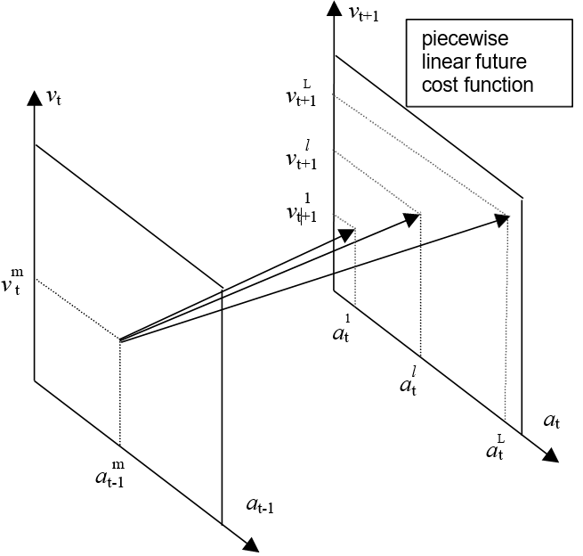
Figure 16 - Serial Correlation in Dual DP